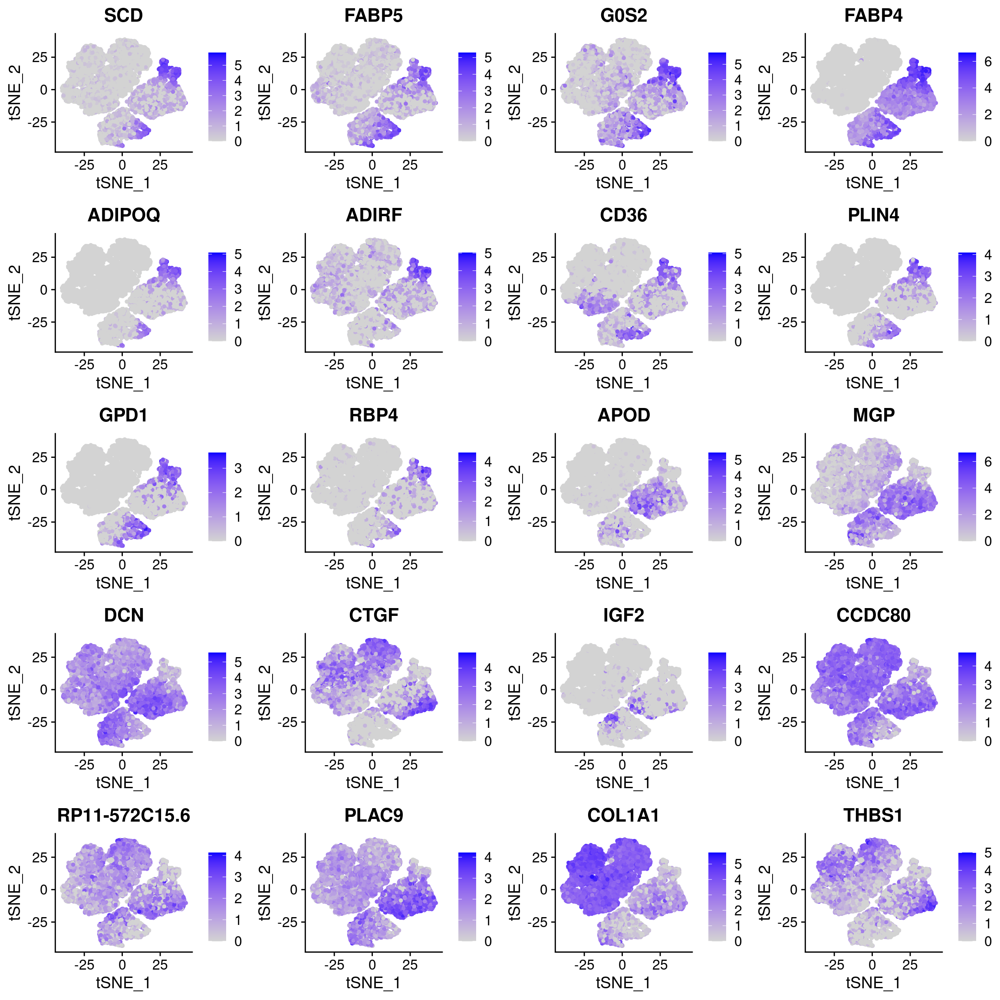
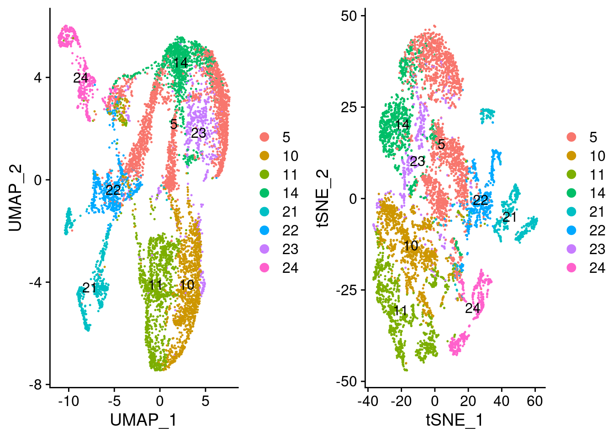
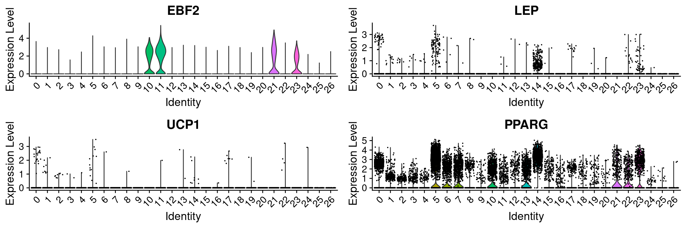
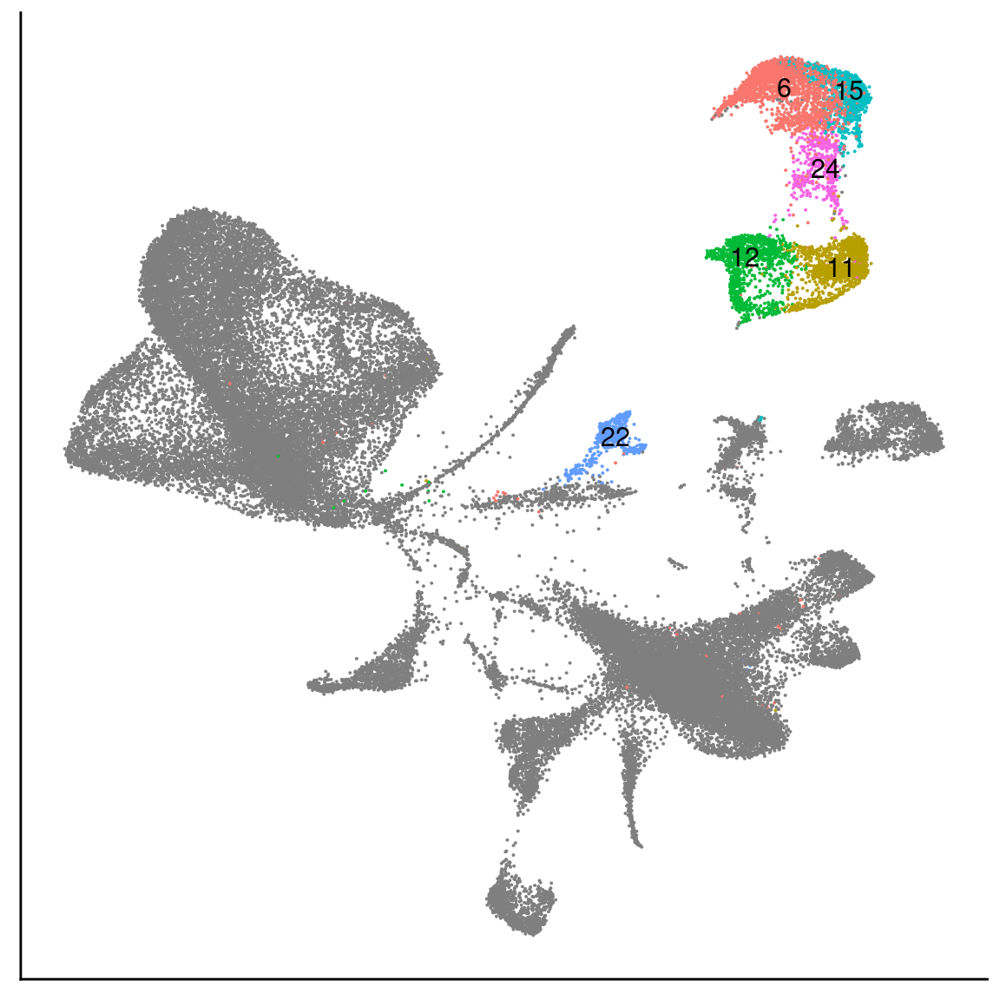

R Notebook
Last updated: 2020-03-23
Checks: 6 1
Knit directory: 10x-adipocyte-analysis/
This reproducible R Markdown analysis was created with workflowr (version 1.6.0). The Checks tab describes the reproducibility checks that were applied when the results were created. The Past versions tab lists the development history.
Great! Since the R Markdown file has been committed to the Git repository, you know the exact version of the code that produced these results.
Great job! The global environment was empty. Objects defined in the global environment can affect the analysis in your R Markdown file in unknown ways. For reproduciblity it’s best to always run the code in an empty environment.
The command set.seed(20181026) was run prior to running the code in the R Markdown file. Setting a seed ensures that any results that rely on randomness, e.g. subsampling or permutations, are reproducible.
Great job! Recording the operating system, R version, and package versions is critical for reproducibility.
Nice! There were no cached chunks for this analysis, so you can be confident that you successfully produced the results during this run.
Using absolute paths to the files within your workflowr project makes it difficult for you and others to run your code on a different machine. Change the absolute path(s) below to the suggested relative path(s) to make your code more reproducible.
| absolute | relative |
|---|---|
| /projects/pytrik/sc_adipose/analyze_10x_fluidigm/10x-adipocyte-analysis/output/seurat_objects/180831/10x-180831-S3 | output/seurat_objects/180831/10x-180831-S3 |
| /projects/pytrik/sc_adipose/analyze_10x_fluidigm/10x-adipocyte-analysis/output/seurat_objects/wolfrum/wolfrum.preadipocyte_subset.rds | output/seurat_objects/wolfrum/wolfrum.preadipocyte_subset.rds |
Great! You are using Git for version control. Tracking code development and connecting the code version to the results is critical for reproducibility. The version displayed above was the version of the Git repository at the time these results were generated.
Note that you need to be careful to ensure that all relevant files for the analysis have been committed to Git prior to generating the results (you can use wflow_publish or wflow_git_commit). workflowr only checks the R Markdown file, but you know if there are other scripts or data files that it depends on. Below is the status of the Git repository when the results were generated:
Ignored files:
Ignored: code/.Rhistory
Ignored: figures/
Ignored: output/bulk_analysis/
Ignored: output/demuxlet/
Ignored: output/harmony/
Ignored: output/liger/
Ignored: output/markergenes/
Ignored: output/monocle/
Ignored: output/seurat_objects/
Ignored: output/velocyto/
Ignored: output/wgcna/
Ignored: tables/
Untracked files:
Untracked: .rstudio_old10/
Untracked: 10x-adipocyte-analysis-copy.Rproj
Untracked: analysis/.ipynb_checkpoints/10x-180831_harmony_palantir-checkpoint.ipynb
Untracked: analysis/.ipynb_checkpoints/velocyto_notebook_180831-checkpoint.ipynb
Untracked: analysis/wolfrum_integration.nb.html
Untracked: analysis/wolfrum_liger.Rmd
Untracked: analysis/wolfrum_liger.nb.html
Untracked: code/BEAM-heatmaps.R
Untracked: code/BEAM_gsea.R
Untracked: code/__pycache__/
Untracked: code/colors.R
Untracked: code/convert_raw_data_to_csv_harmony.R
Untracked: code/harmony.py
Untracked: code/run_monocle_on_wolfrum180831.R
Untracked: code/test.csv
Unstaged changes:
Deleted: 10x-adipocyte-analysis.Rproj
Deleted: analysis/velocyto_notebook_180504.ipynb
Deleted: analysis/velocyto_notebook_180831.ipynb
Modified: analysis/vijay_U-L-branch-markers.Rmd
Modified: analysis/vijay_analysis.Rmd
Modified: analysis/vijay_analysis.nb.html
Modified: analysis/wolfrum-scmap.Rmd
Deleted: code/REMOVE/find-brown-sample-markers-180504-REMOVE.R
Deleted: code/REMOVE/find-white-sample-markers-180504-REMOVE.R
Deleted: code/REMOVE/get-genes-monocle-180831-REMOVE.R
Modified: code/compute-genelists-monocle-depots.R
Modified: code/find-depot-markers-180504.R
Modified: code/find-markers.R
Modified: code/preprocess-data.R
Modified: code/run-alignment.R
Modified: code/run-monocle.R
Modified: code/velocyto_preprocess.py
Note that any generated files, e.g. HTML, png, CSS, etc., are not included in this status report because it is ok for generated content to have uncommitted changes.
These are the previous versions of the R Markdown and HTML files. If you’ve configured a remote Git repository (see ?wflow_git_remote), click on the hyperlinks in the table below to view them.
| File | Version | Author | Date | Message |
|---|---|---|---|---|
| Rmd | 9c28b10 | Pytrik Folkertsma | 2020-03-23 | Removed unnecessary libraries |
| html | 6e008da | Pytrik Folkertsma | 2020-03-23 | Build site. |
| Rmd | 98f120f | Pytrik Folkertsma | 2020-03-23 | Removed integration from notebook |
| Rmd | 1ad23ea | Pytrik Folkertsma | 2020-03-19 | Wolfrum 180831 integration with Harmony and Liger |
| Rmd | d306f3f | Pytrik Folkertsma | 2020-03-19 | Liger and Harmony integration |
| Rmd | adae7b7 | Pytrik Folkertsma | 2020-01-23 | vijay analysis branch markers |
| html | c3504ed | Pytrik Folkertsma | 2019-12-04 | Build site. |
| Rmd | 6e9bd41 | Pytrik Folkertsma | 2019-12-02 | wflow_publish(c(“analysis/wolfrum_analysis.Rmd”)) |
| html | bdb871b | Pytrik Folkertsma | 2019-12-02 | Build site. |
| Rmd | a3dbe85 | Pytrik Folkertsma | 2019-12-02 | wflow_publish(c(“analysis/wolfrum_analysis.Rmd”)) |
| html | d28b5ef | Pytrik Folkertsma | 2019-11-15 | Build site. |
| Rmd | 55cb46e | Pytrik Folkertsma | 2019-11-15 | wolfrum analysis |
| Rmd | 5cffa21 | Pytrik Folkertsma | 2019-11-13 | wolfrum analysis |
| Rmd | 9ae091e | Pytrik Folkertsma | 2019-11-12 | wolfrum branch markers |
library(Seurat)
library(monocle)
library(cowplot)
library(dplyr)
library(tidyr)
library(knitr)
library(kableExtra)
library(DT)wolfrum <- readRDS('/projects/timshel/sc-scheele_lab_adipose_fluidigm_c1/data-wolfrum/wolfrum.compute.seurat_obj.rds')
data_180831 <- readRDS('/projects/pytrik/sc_adipose/analyze_10x_fluidigm/10x-adipocyte-analysis/output/seurat_objects/180831/10x-180831-S3')Which clusters are adipocytes/preadipocytes?
plot_grid(
UMAPPlot(wolfrum, group.by='orig.ident', label=T),
UMAPPlot(wolfrum, group.by='seurat_clusters', label=T)
)Warning: Using `as.character()` on a quosure is deprecated as of rlang 0.3.0.
Please use `as_label()` or `as_name()` instead.
This warning is displayed once per session.
markers <- read.table('output/markergenes/wolfrum/markers_wolfrum.compute.seurat_obj.rds_seurat_clusters_negbinom', sep='\t', header=T)Top 10 positive markers per cluster
pos_markers_top10 <- markers %>%
group_by(cluster) %>%
top_n(n=10, wt=avg_logFC)
neg_markers_top20 <- markers %>%
group_by(cluster) %>%
top_n(n=6, wt=desc(avg_logFC))
pos_markers_top10# A tibble: 270 x 7
# Groups: cluster [27]
cluster p_val avg_logFC pct.1 pct.2 p_val_adj gene
<int> <dbl> <dbl> <dbl> <dbl> <dbl> <fct>
1 0 0 -0.250 0.04 0.213 0 NHLRC2
2 0 0 -0.250 0.046 0.242 0 KANSL3
3 0 0 -0.250 0.041 0.238 0 PSMA5
4 0 0 -0.250 0.077 0.248 0 ZNF106
5 0 0 -0.250 0.045 0.201 0 C9orf85
6 0 0 -0.250 0.042 0.247 0 ILKAP
7 0 0 -0.250 0.037 0.24 0 PHF11
8 0 0 -0.250 0.05 0.242 0 SEL1L
9 0 0 -0.251 0.044 0.255 0 KLC1
10 0 0 -0.251 0.034 0.192 0 DZIP3
# … with 260 more rowsWhich clusters are the preadipocytes? Check by plotting some of the DE genes between T1T2T3 and T4T5 in the 180831 dataset.
#DE genes between T1T2T3 and T4T5 in the 10x-180831 data.
markers_T1T2T3_T4T5 <- read.table('output/markergenes/180831/markers_10x-180831_time_combined_negbinom', header=T)
markers_T1T2T3_T4T5 <- markers_T1T2T3_T4T5[order(-markers_T1T2T3_T4T5$avg_logFC),]
markers_T1T2T3 <- markers_T1T2T3_T4T5[which(markers_T1T2T3_T4T5$cluster == 1),]
markers_T4T5 <- markers_T1T2T3_T4T5[which(markers_T1T2T3_T4T5$cluster == 2),]How do these genes look in the 180831 data?
plots <- FeaturePlot(data_180831, features=c(as.vector(markers_T1T2T3$gene)[1:10], as.vector(markers_T4T5$gene)[1:10]), pt.size=1, combine=F)
plot_grid(plotlist=plots, ncol=4)
How are they expressed in the Wolfrum data?
plots <- FeaturePlot(wolfrum, features=c(as.vector(markers_T1T2T3$gene)[1:10], as.vector(markers_T4T5$gene)[1:10]), pt.size=1, combine=F)
plot_grid(plotlist=plots, ncol=2)
Not all genes are expressed clearly in specific clusters. It looks like cluster 22, 21, 5, 14, 23, 11 and 10 are the preadipocytes.
UMAPPlot(wolfrum, group.by='seurat_clusters', label=T)
Also plot the top 10 ECM and Metabolic markers.
#DE genes between T1T2T3 and T4T5 in the 10x-180831 data.
markers_u_l <- read.table('output/markergenes/180831/markers_10x-180831_upperbranch_lowerbranch_negbinom', sep='\t', header=T)
markers_u <- markers_u_l[order(-markers_u_l$avg_logFC),]
markers_l <- markers_u_l[order(markers_u_l$avg_logFC),]How do these genes look in the 180831 data?
plots <- FeaturePlot(data_180831, features=c(as.vector(markers_u$gene)[1:10], as.vector(markers_l$gene)[1:10]), pt.size=1, combine=F)
plot_grid(plotlist=plots, ncol=4)
And how are they expressed in the Wolfrum data?
plots <- FeaturePlot(wolfrum, features=c(as.vector(markers_u$gene)[1:10], as.vector(markers_l$gene)[1:10]), pt.size=1, combine=F)Warning in FetchData(object = object, vars = c(dims, "ident", features), : The
following requested variables were not found: RP11-572C15.6plot_grid(plotlist=plots, ncol=2)
The U and L branch markers are clearly expressed in the two clusters in the top right of the UMAP plot.
Check how many of the marker genes are found in each cluster.
get_gene_overlap_per_cluster <- function(min_logFC, n_genes){
pos_markers <- markers[markers$avg_logFC > min_logFC,]
genes_P <- c(as.vector(markers_T1T2T3$gene)[1:n_genes])
#genes_P <- c(as.vector(markers_T1T2T3$gene)[1:n_genes], as.vector(markers_T4T5$gene)[1:n_genes])
genes_U <- as.vector(markers_u$gene)[1:n_genes]
genes_L <- as.vector(markers_l$gene)[1:n_genes]
all_genes <- unique(c(genes_P, genes_U, genes_L))
df <- as.data.frame(matrix(ncol=4, nrow=length(unique(pos_markers$cluster))))
colnames(df) <- c('total_overlap', 'overlap_P', 'overlap_L', 'overlap_U')
rownames(df) <- unique(pos_markers$cluster)
for (i in 1:length(unique(pos_markers$cluster))){
genes_cluster <- as.vector(pos_markers[pos_markers$cluster == i,]$gene)
df[i, 'overlap_P'] <- round(length(intersect(genes_cluster, genes_P)) / length(genes_P), 2)
df[i, 'overlap_L'] <- round(length(intersect(genes_cluster, genes_L)) / length(genes_L), 2)
df[i, 'overlap_U'] <- round(length(intersect(genes_cluster, genes_U)) / length(genes_U), 2)
df[i, 'total_overlap'] <- round(length(intersect(genes_cluster, all_genes)) / length(all_genes), 2)
}
return(df)
}
print_top_clusters <- function(df){
print(paste('P: ', toString(rownames(df[order(-df$overlap_P),][1:3,])), sep=''))
print(paste('L: ', toString(rownames(df[order(-df$overlap_L),][1:3,])), sep=''))
print(paste('U: ', toString(rownames(df[order(-df$overlap_U),][1:3,])), sep=''))
}Table shows the percentage of genes with avgLogFC > 0.7 that was found in the cluster. Sort on columns to get the top clusters.
logfc_0.5_genes_100 <- get_gene_overlap_per_cluster(0.5, 100)
datatable(logfc_0.5_genes_100)Check the top 5 clusters per branch for different n_genes and min logFC
logfc <- c(0.25, 0.5, 0.7)
n_genes <- c(100, 100, 100)
for (i in 1:length(logfc)){
print(paste('min_logFC: ', logfc[i], ' | n_genes: ', n_genes[i], sep=''))
df <- get_gene_overlap_per_cluster(logfc[i], n_genes[i])
print_top_clusters(df)
}[1] "min_logFC: 0.25 | n_genes: 100"
[1] "P: 24, 11, 22"
[1] "L: 11, 10, 23"
[1] "U: 14, 24, 23"
[1] "min_logFC: 0.5 | n_genes: 100"
[1] "P: 24, 11, 22"
[1] "L: 11, 10, 23"
[1] "U: 14, 23, 24"
[1] "min_logFC: 0.7 | n_genes: 100"
[1] "P: 24, 11, 19"
[1] "L: 11, 10, 23"
[1] "U: 14, 23, 22"There is some overlap between branches which is good. Cluster 11 is shared between P and L, cluster 14 is shared between P and U and cluster 23 is shared between L and U. This would indicate that cluster 24 contains most immature preadipocytes, cluster 10 contains most mature L branch cells and cluster 22 contains most mature U branch cells.\
Based on the results:\ P = 24\ L = 11\ U = 14\
Hypothesis: cluster 23 represents preadipocytes at the start of differentation (the cell states between T3 and T4 in 180831 data that we missed). Cluster 5 represents even more mature metabolic cells and cluster 11 represents more mature ECM cells.\
Clusters 22 shares most genes with the P branch. Cluster 23 most with the U branch. (see datatable above). These could also represent the preadipocytes at start of differentiation or the cells that transfer back to progenitor cells. \
UMAPPlot(wolfrum, group.by='seurat_clusters', label=T)
#Preadipocyte subset
#Idents(wolfrum) <- wolfrum@meta.data$seurat_clusters
#preadipocyte_subset <- subset(wolfrum, idents=c(5, 14, 23, 11, 10, 21, 22, 24))
#preadipocyte_subset <- FindVariableFeatures(preadipocyte_subset)
#preadipocyte_subset <- ScaleData(preadipocyte_subset)
#preadipocyte_subset <- RunPCA(object=preadipocyte_subset, npcs=30)
#ElbowPlot(preadipocyte_subset, ndims=30)
#preadipocyte_subset <- FindNeighbors(object = preadipocyte_subset, dims=1:13)
#preadipocyte_subset <- FindClusters(object = preadipocyte_subset, resolution=0.8)
#preadipocyte_subset <- RunTSNE(object = preadipocyte_subset, dims=1:13)
#preadipocyte_subset <- RunUMAP(object = preadipocyte_subset, dims=1:13)
#saveRDS(preadipocyte_subset, '/projects/pytrik/sc_adipose/analyze_10x_fluidigm/10x-adipocyte-analysis/output/seurat_objects/wolfrum/wolfrum.preadipocyte_subset.rds')
preadipocyte_subset <- readRDS('output/seurat_objects/wolfrum/wolfrum.preadipocyte_subset.rds')
plot_grid(
UMAPPlot(preadipocyte_subset, group.by='all_data_seurat_clusters', label=T),
TSNEPlot(preadipocyte_subset, group.by='all_data_seurat_clusters', label=T)
)
Figures
adipoq <- FeaturePlot(wolfrum, features='ADIPOQ') + NoLegend() + NoAxes() + theme(plot.title = element_text(size=20)) + scale_color_gradient(name='Expression', low='gray', high='blue', guide='colorbar', limits=c(0,5))Scale for 'colour' is already present. Adding another scale for 'colour',
which will replace the existing scale.lipe <- FeaturePlot(wolfrum, features='LIPE') + NoLegend() + NoAxes() + theme(plot.title = element_text(size=20)) + scale_color_gradient(name='Expression', low='gray', high='blue', guide='colorbar', limits=c(0,5))Scale for 'colour' is already present. Adding another scale for 'colour',
which will replace the existing scale.apod <- FeaturePlot(wolfrum, features='APOD') + NoLegend() + NoAxes() + theme(plot.title = element_text(size=20)) + scale_color_gradient(name='Expression', low='gray', high='blue', guide='colorbar', limits=c(0,5))Scale for 'colour' is already present. Adding another scale for 'colour',
which will replace the existing scale.dcn <- FeaturePlot(wolfrum, features='DCN') + NoAxes() + theme(plot.title = element_text(size=20), legend.text=element_text(size=20), legend.key.height = unit(1.3, 'cm')) + scale_color_gradient(name='Expression', low='gray', high='blue', guide='colorbar', limits=c(0,5)) Scale for 'colour' is already present. Adding another scale for 'colour',
which will replace the existing scale.g <- plot_grid(
adipoq, lipe, apod, dcn, ncol=4, rel_widths=c(1, 1, 1, 1.3)
)
g
save_plot("figures/figures_paper/main_figures/Figure_wolfrum/featureplots.pdf", g, base_width=16, base_height=4)EBF2 and LEP
ebf2 <- FeaturePlot(wolfrum, features='EBF2') + NoAxes() + theme(plot.title = element_text(size=20), legend.text=element_text(size=20), legend.key.height = unit(1.3, 'cm')) + scale_color_gradient(name='Expression', low='gray', high='blue', guide='colorbar') Scale for 'colour' is already present. Adding another scale for 'colour',
which will replace the existing scale.pparg <- FeaturePlot(wolfrum, features='PPARG') + NoAxes() + theme(plot.title = element_text(size=20), legend.text=element_text(size=20), legend.key.height = unit(1.3, 'cm')) + scale_color_gradient(name='Expression', low='gray', high='blue', guide='colorbar') Scale for 'colour' is already present. Adding another scale for 'colour',
which will replace the existing scale.lep <- FeaturePlot(wolfrum, features='LEP') + NoAxes() + theme(plot.title = element_text(size=20), legend.text=element_text(size=20), legend.key.height = unit(1.3, 'cm')) + scale_color_gradient(name='Expression', low='gray', high='blue', guide='colorbar') Scale for 'colour' is already present. Adding another scale for 'colour',
which will replace the existing scale.ucp1 <- FeaturePlot(wolfrum, features='UCP1') + NoAxes() + theme(plot.title = element_text(size=20), legend.text=element_text(size=20), legend.key.height = unit(1.3, 'cm')) + scale_color_gradient(name='Expression', low='gray', high='blue', guide='colorbar') Scale for 'colour' is already present. Adding another scale for 'colour',
which will replace the existing scale.ebf2vln <- VlnPlot(wolfrum, features='EBF2', group.by='RNA_snn_res.0.8', pt.size=-1) + NoLegend()
lepvln <- VlnPlot(wolfrum, features='LEP', group.by='RNA_snn_res.0.8', pt.size=0.1) + NoLegend()
ucp1vln <- VlnPlot(wolfrum, features='UCP1', group.by='RNA_snn_res.0.8', pt.size=0.1) + NoLegend()
ppargvln <- VlnPlot(wolfrum, features='PPARG', group.by='RNA_snn_res.0.8', pt.size=0.1) + NoLegend()
plot_grid(ebf2vln, lepvln, ucp1vln, ppargvln, ncol=2)
#save_plot("../figures/figures_paper/main_figures/Figure_wolfrum/ebf2.pdf", ebf2, base_width=5, base_height=4)
#save_plot("../figures/figures_paper/main_figures/Figure_wolfrum/ebf2vln.pdf", ebf2vln, base_width=6, base_height=2)
#save_plot("../figures/figures_paper/main_figures/Figure_wolfrum/pparg.pdf", pparg, base_width=5, base_height=4)
#save_plot("../figures/figures_paper/main_figures/Figure_wolfrum/ppargvln.pdf", ppargvln, base_width=6, base_height=2)
#save_plot("../figures/figures_paper/main_figures/Figure_wolfrum/ucp1.pdf", ucp1, base_width=5, base_height=4)
#save_plot("../figures/figures_paper/main_figures/Figure_wolfrum/ucp1vln.pdf", ucp1vln, base_width=6, base_height=2)
#save_plot("../figures/figures_paper/main_figures/Figure_wolfrum/lep.pdf", lep, base_width=5, base_height=4)
#save_plot("../figures/figures_paper/main_figures/Figure_wolfrum/lepvln.pdf", lepvln, base_width=5, base_height=2)UMAPPlot(wolfrum, label=T, group.by='RNA_snn_res.0.8') 
VlnPlot(wolfrum, features=c('EBF2', 'PPARG'), group.by='RNA_snn_res.0.8', pt.size=-1, ncol=1)
| Version | Author | Date |
|---|---|---|
| 6e008da | Pytrik Folkertsma | 2020-03-23 |
#EBF2 and PPARG
#PPARG: 5, 14, 23
#EBF2: 10, 11, 21, 23
new_labels <- unlist(lapply(wolfrum@meta.data$RNA_snn_res.0.8, function(x){
if (x %in% c(5, 14, 23, 10, 11, 21, 23)){
return(x)
} else {
return(NA)
}
}))
wolfrum@meta.data['labels_clusters_preadipocytes'] <- new_labels
p <- UMAPPlot(wolfrum, group.by='labels_clusters_preadipocytes', label=T) + theme(axis.text = element_blank(), axis.ticks = element_blank(), axis.title = element_blank(), plot.margin=grid::unit(c(0,0,0,0), "mm")) + NoLegend()
p
save_plot("figures/figures_paper/main_figures/Figure_wolfrum/UMAP_adipocyte_clusters2.pdf", p, base_width=6, base_height=5)ebf2 <- FeaturePlot(wolfrum, features='EBF2', pt.size=0.5) + NoLegend() + NoAxes() + theme(plot.title = element_text(size=20)) + scale_color_gradient(name='Expression', low='gray', high='blue', guide='colorbar', limits=c(0,5))Scale for 'colour' is already present. Adding another scale for 'colour',
which will replace the existing scale.pparg <- FeaturePlot(wolfrum, features='PPARG', pt.size=0.5) + NoAxes() + theme(plot.title = element_text(size=20), legend.text=element_text(size=15), legend.key.height = unit(1.3, 'cm')) + scale_color_gradient(name='Expression', low='gray', high='blue', guide='colorbar', limits=c(0,5)) Scale for 'colour' is already present. Adding another scale for 'colour',
which will replace the existing scale.g <- plot_grid(
ebf2, pparg, ncol=2, rel_widths = c(1, 1.3)
)
g
save_plot("figures/figures_paper/main_figures/Figure_wolfrum/EBF2_PPARG_ptsize0.5.pdf", g, base_width=8.5, base_height=4)pparg <- FeaturePlot(data_180831, features='PPARG', pt.size=0.5) + NoLegend() + NoAxes() + theme(plot.title = element_text(size=20)) + scale_color_gradient(name='Expression', low='gray', high='blue', guide='colorbar', limits=c(0,2.5))Scale for 'colour' is already present. Adding another scale for 'colour',
which will replace the existing scale.ebf2 <- FeaturePlot(data_180831, features='EBF2', pt.size=0.5) + NoAxes() + theme(plot.title = element_text(size=20), legend.text=element_text(size=15), legend.key.height = unit(1.3, 'cm')) + scale_color_gradient(name='Expression', low='gray', high='blue', guide='colorbar', limits=c(0,2.5)) Scale for 'colour' is already present. Adding another scale for 'colour',
which will replace the existing scale.g <- plot_grid(
pparg, ebf2, ncol=2, rel_widths = c(1, 1.4)
)
g
| Version | Author | Date |
|---|---|---|
| 6e008da | Pytrik Folkertsma | 2020-03-23 |
#save_plot("../figures/figures_paper/main_figures/Figure_wolfrum/EBF2_PPARG_no-axes.pdf", g, base_width=8.5, base_height=4)data.180831.brown <- subset(data_180831, cells=rownames(data_180831@meta.data)[data_180831@meta.data$type == 'brown'])colors.states.labels <- c(
P='#ecdd83',
L='#93c8bc',
U='#e27268')
ebf2_vln_brown <- VlnPlot(data.180831.brown, features='EBF2', group.by='State.labels', pt.size=-1, cols=colors.states.labels) + NoLegend() + theme(axis.title = element_blank(), axis.text.x = element_text(angle = 0, size=15), plot.title = element_text(size=20), axis.text.y = element_text(size=15), plot.margin = unit(c(1.5,1.5,1.5,1.5), "lines")) + scale_y_continuous(breaks=c(0, 1, 2))Scale for 'y' is already present. Adding another scale for 'y', which will
replace the existing scale.pparg_vln_brown <- VlnPlot(data.180831.brown, features='PPARG', group.by='State.labels', pt.size=-1, cols=colors.states.labels) + NoLegend() + theme(axis.title = element_blank(), axis.text.x = element_text(angle = 0, size=15), plot.title = element_text(size=20), axis.text.y = element_text(size=15), plot.margin = unit(c(1.5,1.5,1.5,1.5), "lines")) + scale_y_continuous(breaks=c(0, 1, 2))Scale for 'y' is already present. Adding another scale for 'y', which will
replace the existing scale.g <- plot_grid(
pparg_vln_brown, ebf2_vln_brown, ncol=2
)
g
#save_plot("../figures/figures_paper/main_figures/Figure_wolfrum/EBF2_PPARG_brown_violinplots.pdf", g, base_width=8.5, base_height=3)plots <- VlnPlot(wolfrum, features=c('ADIPOQ', 'LIPE', 'PLIN4', 'FABP4', 'ADIRF', 'APOD', 'MGP', 'DCN', 'CCDC80', 'PLAC9'), group.by='RNA_snn_res.0.8', pt.size=-1, combine=F)
for (i in 1:length(plots)){
if (i == length(plots)){
plots[[i]] <- plots[[i]] + NoLegend() +
theme(plot.title=element_blank(),
axis.title.y=element_blank(),
axis.line.x=element_blank(),
axis.text.x=element_text(angle=0, size=12),
plot.margin = unit(c(0, 0, 0, 0), "cm")) +
labs(x='Cluster')
} else {
plots[[i]] <- plots[[i]] + NoLegend() +
theme(plot.title=element_blank(),
axis.title.y=element_blank(),
axis.line.x=element_blank(),
axis.ticks.x=element_blank(),
axis.text.x=element_blank(),
axis.title.x=element_blank(),
plot.margin = unit(c(0, 0, 0, 0), "cm"))
}
}
vlnplts <- plot_grid(plotlist=plots, ncol=1, rel_heights=c(1,1,1,1,1,1,1,1,1,1.6))
vlnplts
| Version | Author | Date |
|---|---|---|
| 6e008da | Pytrik Folkertsma | 2020-03-23 |
sessionInfo()R version 3.5.3 (2019-03-11)
Platform: x86_64-pc-linux-gnu (64-bit)
Running under: Storage
Matrix products: default
BLAS/LAPACK: /usr/lib64/libopenblas-r0.3.3.so
locale:
[1] LC_CTYPE=en_US.UTF-8 LC_NUMERIC=C
[3] LC_TIME=en_US.UTF-8 LC_COLLATE=en_US.UTF-8
[5] LC_MONETARY=en_US.UTF-8 LC_MESSAGES=en_US.UTF-8
[7] LC_PAPER=en_US.UTF-8 LC_NAME=C
[9] LC_ADDRESS=C LC_TELEPHONE=C
[11] LC_MEASUREMENT=en_US.UTF-8 LC_IDENTIFICATION=C
attached base packages:
[1] splines stats4 parallel stats graphics grDevices utils
[8] datasets methods base
other attached packages:
[1] DT_0.12 kableExtra_1.1.0 knitr_1.28
[4] tidyr_1.0.2 dplyr_0.8.5 cowplot_1.0.0
[7] monocle_2.10.1 DDRTree_0.1.5 irlba_2.3.3
[10] VGAM_1.1-2 ggplot2_3.3.0 Biobase_2.42.0
[13] BiocGenerics_0.28.0 Matrix_1.2-18 Seurat_3.1.4
[16] workflowr_1.6.0
loaded via a namespace (and not attached):
[1] backports_1.1.5 sn_1.5-5 plyr_1.8.6
[4] igraph_1.2.4.2 lazyeval_0.2.2 crosstalk_1.0.0
[7] densityClust_0.3 listenv_0.8.0 fastICA_1.2-2
[10] TH.data_1.0-10 digest_0.6.25 htmltools_0.4.0
[13] viridis_0.5.1 fansi_0.4.1 gdata_2.18.0
[16] magrittr_1.5 cluster_2.1.0 ROCR_1.0-7
[19] limma_3.38.3 readr_1.3.1 globals_0.12.5
[22] RcppParallel_4.4.4 matrixStats_0.55.0 docopt_0.6.1
[25] sandwich_2.5-1 colorspace_1.4-1 rvest_0.3.5
[28] rappdirs_0.3.1 ggrepel_0.8.2 xfun_0.12
[31] sparsesvd_0.2 crayon_1.3.4 jsonlite_1.6.1
[34] survival_3.1-11 zoo_1.8-7 ape_5.3
[37] glue_1.3.1 gtable_0.3.0 webshot_0.5.2
[40] leiden_0.3.3 future.apply_1.4.0 scales_1.1.0
[43] pheatmap_1.0.12 mvtnorm_1.1-0 bibtex_0.4.2.2
[46] Rcpp_1.0.3 metap_1.3 plotrix_3.7-7
[49] xtable_1.8-4 viridisLite_0.3.0 reticulate_1.14
[52] rsvd_1.0.3 tsne_0.1-3 htmlwidgets_1.5.1
[55] httr_1.4.1 FNN_1.1.3 gplots_3.0.3
[58] RColorBrewer_1.1-2 TFisher_0.2.0 ica_1.0-2
[61] farver_2.0.3 pkgconfig_2.0.3 uwot_0.1.5
[64] utf8_1.1.4 labeling_0.3 tidyselect_1.0.0
[67] rlang_0.4.5 reshape2_1.4.3 later_1.0.0
[70] munsell_0.5.0 tools_3.5.3 cli_2.0.2
[73] ggridges_0.5.2 fastmap_1.0.1 evaluate_0.14
[76] stringr_1.4.0 yaml_2.2.1 npsurv_0.4-0
[79] fs_1.3.2 fitdistrplus_1.0-14 caTools_1.17.1.2
[82] purrr_0.3.3 RANN_2.6.1 pbapply_1.4-2
[85] future_1.16.0 nlme_3.1-140 mime_0.9
[88] whisker_0.4 slam_0.1-47 xml2_1.2.2
[91] rstudioapi_0.11 compiler_3.5.3 plotly_4.9.2
[94] png_0.1-7 lsei_1.2-0 tibble_2.1.3
[97] stringi_1.4.6 highr_0.8 lattice_0.20-38
[100] HSMMSingleCell_1.2.0 multtest_2.38.0 vctrs_0.2.4
[103] mutoss_0.1-12 pillar_1.4.3 lifecycle_0.2.0
[106] combinat_0.0-8 Rdpack_0.11-1 lmtest_0.9-37
[109] RcppAnnoy_0.0.15 data.table_1.12.8 bitops_1.0-6
[112] gbRd_0.4-11 httpuv_1.5.2 patchwork_1.0.0.9000
[115] R6_2.4.1 promises_1.1.0 KernSmooth_2.23-15
[118] gridExtra_2.3 codetools_0.2-16 MASS_7.3-51.4
[121] gtools_3.8.1 assertthat_0.2.1 rprojroot_1.3-2
[124] withr_2.1.2 qlcMatrix_0.9.7 sctransform_0.2.1
[127] mnormt_1.5-6 multcomp_1.4-12 hms_0.5.3
[130] grid_3.5.3 rmarkdown_2.1 Rtsne_0.15
[133] git2r_0.26.1 shiny_1.4.0 numDeriv_2016.8-1.1